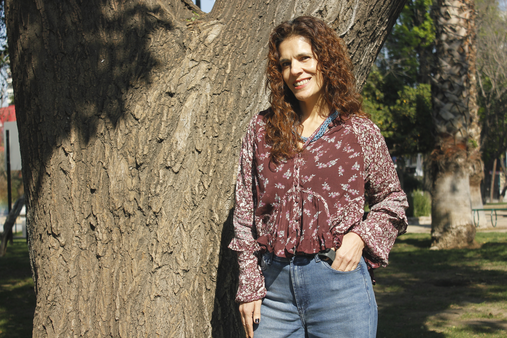
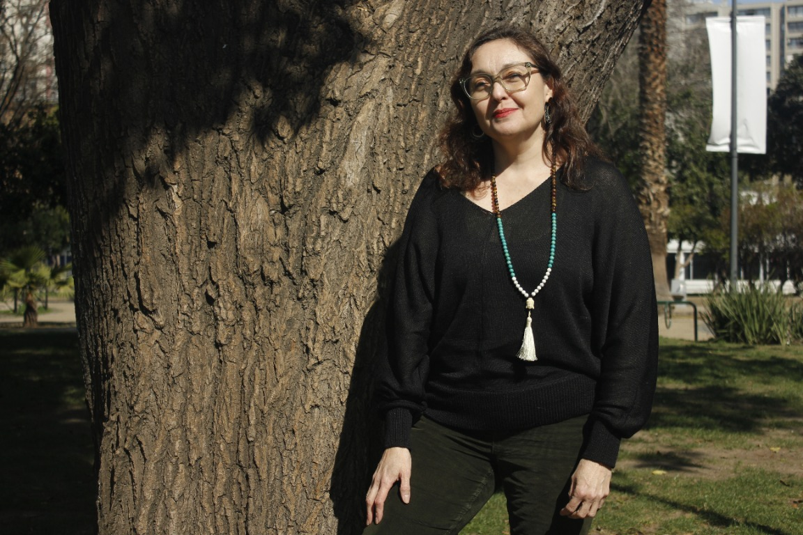
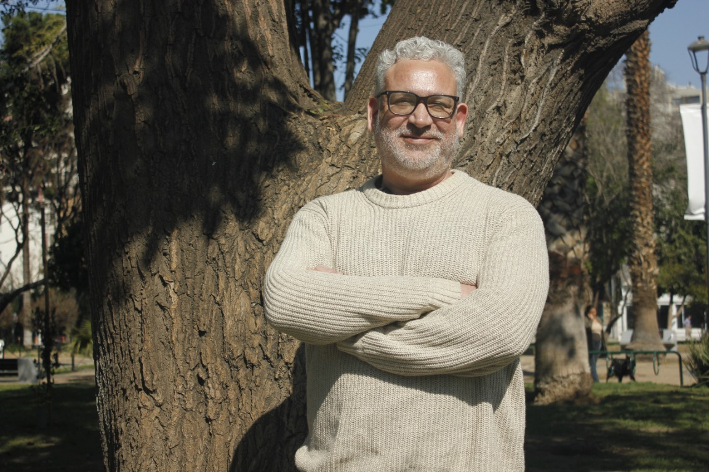

Un espacio para reorganizarse, recuperar el bienestar y volver a crecer después del sufrimiento
En Gaman-Zen acompañamos en el camino de reparación a personas que enfrentan las consecuencias de experiencias traumáticas en la infancia y/o en la vida adulta. También apoyamos a quienes quieren obtener herramientas para enfrentar las adversidades de la cotidianeidad manteniéndose sanos.
«La resiliencia es el arte de navegar en los torrentes, el arte de metamorfosear el dolor para darle sentido; la capacidad de ser feliz incluso cuando tienes heridas en el alma» — Boris Cyrulnik
Equipo acreditado ante la Superintendencia de Salud de Chile
Un acompañamiento con dos puertas de entrada
Entendemos que no existe una única forma de abordar el sufrimiento psicológico, por ello nuestro enfoque terapéutico es integrativo y basado en la evidencia científica. Trabajamos con terapias y técnicas que han demostrado eficacia, seleccionándolas y combinándolas de manera flexible de acuerdo con las necesidades, características y momento vital de cada persona.
Atención clínica online
Psicología, psiquiatría y otras terapias de salud mental por videoconsulta, con ficha clínica protegida y horarios flexibles.
Atenciones presenciales
El cuerpo es un elemento indispensable en el tratamiento de las consecuencias del trauma y el sufrimiento psíquico en general, para ello hemos incorporado arte terapia, yoga sensible a trauma y Kinesiología sensible a trauma.
Nuestro propósito
Centro de Salud Integral para la Resiliencia: un equipo multidisciplinario comprometido con el bienestar emocional de cada persona
Misión
Otorgar un acompañamiento integral y humano a personas que, a partir de experiencias traumáticas, sufren síntomas o conductas que hoy no son adaptativas, además de ayudar a mejorar la calidad de vida de quien lo necesite. Trabajamos con terapias de evidencia científica y con el profesionalismo de un equipo multidisciplinario comprometido con el bienestar emocional de sus pacientes.
Visión
Convertirnos en un centro de referencia en el abordaje integral del trauma y el bienestar emocional, reconocido por ofrecer una atención humana, multidisciplinaria y basada en evidencia científica, que contribuya a mejorar la calidad de vida de las personas y su entorno.
Nuestro Nombre
Gaman — Es un concepto de la tradición ZEN. Es la capacidad de permanecer íntegro en medio de la dificultad. No significa negar el dolor ni endurecerse frente a él, sino atravesarlo sin perder el propio centro. Es tolerar aquello que por el momento no puede cambiarse, sosteniendo la dignidad, la serenidad y la posibilidad de seguir adelante. En otras palabras es la fuerza serena de quien atraviesa la tormenta conservando su centro.

Camila Martínez Ahumada
Psicóloga clínica
Trauma, psicoterapia EMDR y terapia sistémica
Psicóloga con más de dos décadas de trayectoria clínica, psicosocial y forense, trabajando con adultos, adolescentes, niños y familias. Se ha desempeñado además como perito forense en la Policía de Investigaciones de Chile.
Formación y trayectoria
- Psicóloga y Licenciada en Psicología, Universidad Nacional Andrés Bello
- Postítulo en Terapia Sistémica para Niños y Adolescentes, Pontificia Universidad Católica de Chile (2003–2004)
- Diplomado en Psiquiatría y Psicología Forense en la Reforma Procesal Penal, Universidad de Chile (2005–2006)
- Entrenamiento Básico en Psicoterapia EMDR, Partes I y II, EMDR Chile (2020–2021)
- Trauma y experiencias adversas, trauma complejo e infancia
- Psicoterapia EMDR y regulación emocional
- Maltrato y abuso sexual infantil, violencia de género
- Intervención en crisis y atención a víctimas
Trabaja desde una mirada integrativa, incorporando herramientas de psicoterapia EMDR y terapia sistémica, poniendo especial atención en el procesamiento de experiencias traumáticas y el fortalecimiento de recursos personales.

Tamara Galleguillos
Médica psiquiatra
Psicotrauma, EMDR y psicoterapia centrada en la compasión
Médica psiquiatra formada en la Universidad de Chile, con más de 20 años de experiencia docente y trayectoria en psiquiatría forense. Se ha dedicado al tratamiento del psicotrauma desde 2011.
Formación y trayectoria
- Médica psiquiatra, Universidad de Chile
- Magíster en Psicología Clínica, Universidad de Chile
- Formación en terapia cognitivo-conductual, EMDR, psicoterapia centrada en la compasión y DBR
- Académica en la Universidad de Chile y en la Pontificia Universidad Católica de Chile
- Docente universitaria durante 20 años
- Perito judicial reconocida por la Corte de Apelaciones
- Psiquiatra forense desde 2004
- Tratamiento del psicotrauma desde 2011
Integra herramientas de terapia cognitivo-conductual, EMDR, psicoterapia centrada en la compasión y DBR para abordar el psicotrauma de manera individualizada.

José Matteo Guzmán
Psicólogo clínico
Trauma psíquico, EMDR y protección de la infancia
Psicólogo clínico con amplia trayectoria en la red pública de salud. Actualmente se desempeña en el Servicio de Pediatría del Hospital Clínico San Borja Arriarán, donde desarrolla labores de atención clínica, protección de la infancia y acompañamiento de niños, adolescentes y sus familias.
Formación y trayectoria
- Psicólogo clínico del Servicio de Pediatría del Hospital Clínico San Borja Arriarán
- Director del COSAM Maipú
- Psicólogo clínico del Hospital Roberto del Río
- Experiencia docente universitaria y en gestión de equipos multidisciplinarios
- Formación de posgrado en psicología clínica
- Diagnóstico y tratamiento del trauma psíquico
- Psicoterapia EMDR
- Humanización de la atención en salud
Integra la atención clínica, la protección de la infancia y el acompañamiento de niños, adolescentes y sus familias desde una mirada especializada, humana y multidisciplinaria.

María Jesús González Martínez
Arteterapeuta
Arteterapia y Yoga Sensible al Trauma (TCTSY)
Licenciada en Artes Visuales y arteterapeuta, con más de 13 años acompañando a personas y grupos en contextos clínicos, comunitarios y de salud mental, integrando arteterapia, cuerpo y procesos creativos.
Formación y trayectoria
- Licenciatura en Artes Visuales, mención Pintura y Textil — Universidad de Chile (2006–2010)
- Postítulo en Terapias de Arte, mención Arteterapia — Universidad de Chile (2012–2014)
- Certificación en Trauma Center Trauma-Sensitive Yoga (TCTSY), 300 horas — Justice Resource Institute's Center for Trauma and Embodiment, EE.UU. (2026)
- Profesorado de Yoga, 200 horas YTT — Yogacampus London, Reino Unido (2019–2020)
- Arteterapia y procesos creativos en salud mental
- Yoga Sensible al Trauma (TCTSY), regulación emocional y reconexión corporal
- Trabajo grupal y comunitario con niñeces, adolescencia y personas adultas
- Acompañamiento en contextos de vulnerabilidad, violencia de género y procesos oncológicos
Integra el cuerpo y la creatividad como vías de exploración, expresión y regulación emocional, priorizando la seguridad, la autonomía y el respeto por los ritmos individuales de cada persona.
Todo nuestro equipo cuenta con acreditación vigente ante la Superintendencia de Salud de Chile.
Servicios
Consultas por telemedicina con el mismo estándar clínico de una sesión presencial, resguardando siempre tu privacidad. Y consultas presenciales en las atenciones de Yoga sensible a trauma, arte terapia y kinesiología sensible a trauma.
Psiquiatría
Evaluación y seguimiento médico especializado, integrado al plan terapéutico y coordinado con el resto del equipo clínico.
Psicología
Procesos terapéuticos individuales orientados al trauma, la regulación emocional y la recuperación de recursos personales.
Terapias de salud complementarias
Terapia ocupacional y técnicas de regulación que se suman al proceso clínico, adaptadas a las necesidades de cada paciente.
Ficha clínica protegida. Nuestra plataforma de atención online cumple estrictamente con la Ley de Derechos y Deberes de los Pacientes, resguardando la confidencialidad de tu información en todo momento.
Un camino de acompañamiento, paso a paso
Programas terapéuticos estructurados según la etapa del proceso de cada persona: desde la estabilización inicial hasta la plena reintegración a la vida.
SanghaEspacio de apoyo mutuo
Estabilización, seguridad y contención en momentos de alta intensidad emocional.
Dirigido a personas con síntomas emocionales y físicos de alta intensidad que aún no cuentan con las condiciones para abordar directamente sus experiencias traumáticas. El foco no es exponer el trauma, sino disminuir la sintomatología aguda, recuperar la sensación de seguridad y desarrollar recursos para afrontar las crisis, respetando el ritmo y los límites de cada persona.
Objetivos del programa
- Psicoeducación para el paciente y su entorno
- Disminuir la intensidad de los síntomas
- Entregar herramientas para afrontar momentos de crisis
- Entregar herramientas para manejar la disociación
- Favorecer la regulación emocional
- Fortalecer la sensación de seguridad y control
- Preparar a la persona para una futura etapa de tratamiento del trauma
Dirigido a: personas que experimentan desregulación emocional intensa, sintomatología disociativa y dificultades para conectarse de manera segura con sus emociones y sensaciones corporales.
TathatāLa naturaleza misma de las cosas
Tratamiento de la sintomatología post traumática, reprocesamiento y resignificación del trauma.
Programa especializado en el estrés postraumático y el estrés postraumático complejo, orientado a comprender y transformar las adaptaciones neurobiológicas que dejan las experiencias traumáticas prolongadas o repetidas. A través de un proceso gradual, respetuoso y compasivo, ayuda a construir nuevas formas de relacionarse con las emociones, el cuerpo, la historia personal y los demás.
Objetivos del programa
- Comprender los efectos del trauma en la vida cotidiana
- Reconocer patrones emocionales y relacionales asociados
- Fortalecer la regulación emocional
- Reprocesar y resignificar gradualmente las experiencias traumáticas
- Construir una relación más segura con uno mismo y con los demás
Dirigido a: personas con síntomas post traumáticos derivados de trauma complejo.
PāramitāEl que ha llegado a la otra orilla
Integrar lo vivido y volver a participar plenamente en la vida.
Acompaña a personas con estrés postraumático complejo que han avanzado en su proceso terapéutico y necesitan fortalecer su integración a la vida personal, familiar y social. Sostiene la transición desde el tratamiento del trauma hacia la recuperación de proyectos, relaciones, roles y actividades significativas, construyendo una identidad que no quede definida únicamente por la experiencia traumática.
Objetivos del programa
- Integrar la experiencia traumática a la historia personal
- Fortalecer la identidad y la autonomía
- Recuperar vínculos familiares y sociales
- Retomar actividades, proyectos y roles significativos
- Favorecer una participación más plena en la vida cotidiana
Dirigido a: personas que, tras avanzar en el tratamiento del trauma, desean fortalecer su autonomía y su reintegración familiar, social, académica o laboral.
¿No sabes cuál es el plan indicado para ti?
Conversemos sobre tu procesoTerapias de concientización y conexión
Espacios grupales y presenciales para equipos y organizaciones, con respaldo clínico y foco en la prevención.
Estos programas se complementan con nuestras salidas de terapia ocupacional en la naturaleza —trekking, yoga y jardinería terapéutica— pensadas para fortalecer la resiliencia desde el cuerpo, el vínculo y el entorno natural.
Cómo funcionan
- 4 sesiones teórico-prácticas y participativas
- Modalidad flexible: individual o grupal
- Si se detectan señales de alerta, nuestro equipo clínico orienta y evalúa
Estrés y adaptación al cambio
Transformar la presión en capacidad de respuesta.
- Comprender señales y factores de estrés
- Incorporar estrategias de regulación y recuperación
- Fortalecer adaptación, foco y autocuidado
Neurodiversidad y neuroinclusión
Distintas formas de pensar. Más maneras de aportar.
- Reconocer barreras y fortalezas diversas
- Mejorar comunicación y participación
- Diseñar entornos de trabajo más inclusivos
Multiculturalidad y convivencia laboral
La diversidad se convierte en valor cuando sabemos convivir.
- Comprender diferencias culturales y generacionales
- Prevenir malentendidos y tensiones
- Impulsar colaboración y pertenencia
Cuidar equipos en momentos complejos
Acompañar bien también es una capacidad organizacional.
- Acompañar con empatía y límites saludables
- Sostener conversaciones difíciles
- Fortalecer resiliencia, sentido y cuidado
¿Buscas llevar estos programas a tu organización?
Agenda un taller para tu equipoContacto
Cuéntanos qué necesitas y te contactaremos a la brevedad para coordinar tu primera sesión o el programa que buscas para tu equipo.